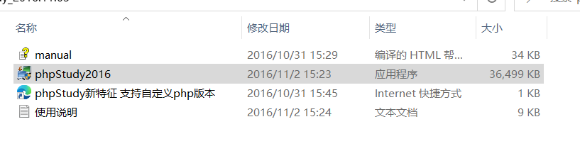
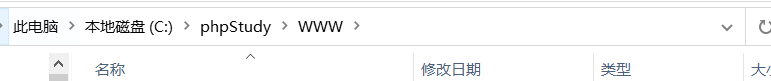
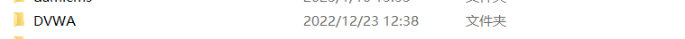
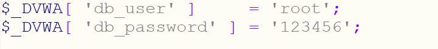
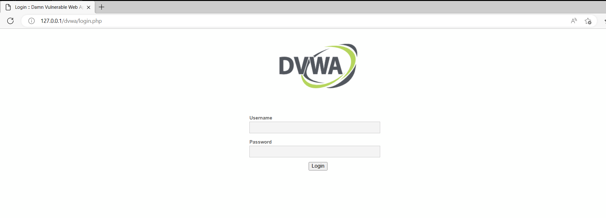
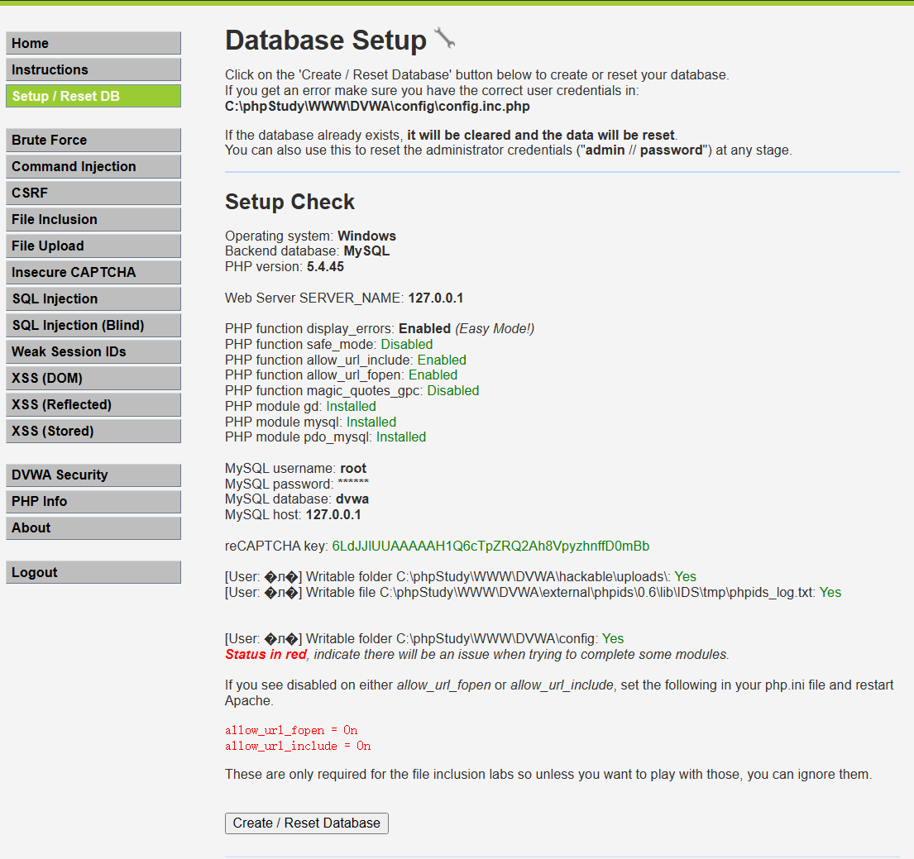
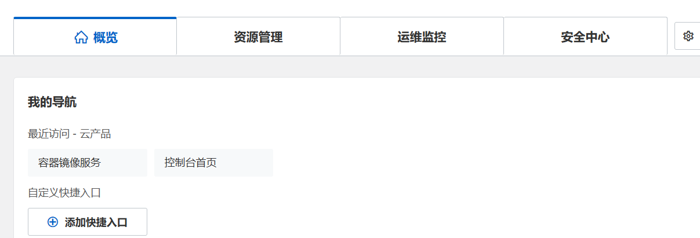
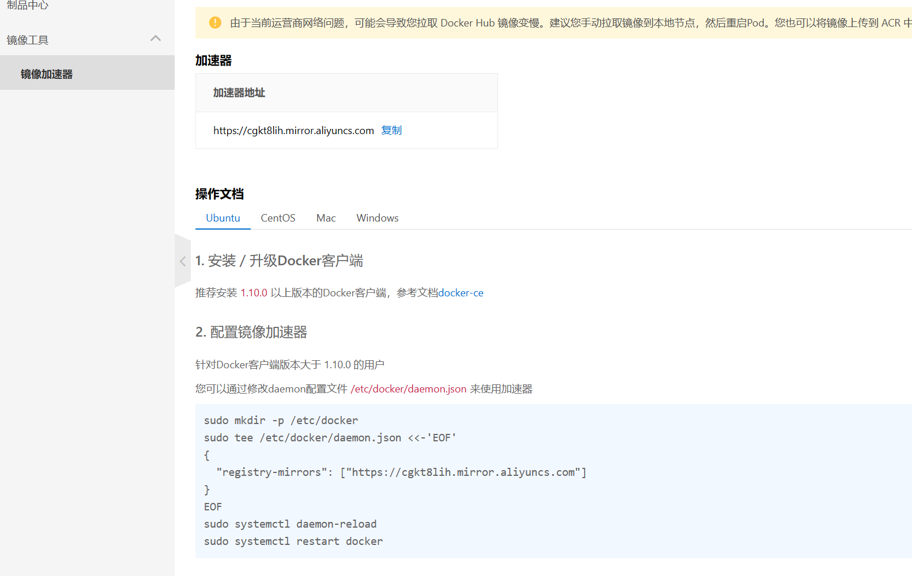
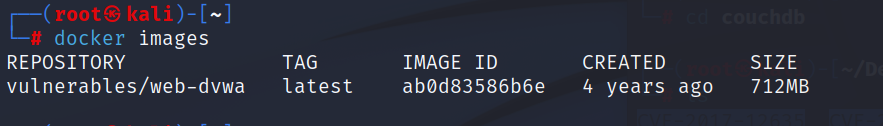
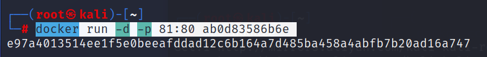

Windows 搭建流程
利用 phpstudy 快速搭建，建议使用老版本更加适合新手。
安装 phpstudy

安装完成后要进入 www 的文件夹：

下载 DVWA 源码
去下载 DVWA 的源码（建议使用 GitHub，Gitee 也可以）：
https://github.com/digininja/DVWA
GitHub 连不上的话可以试试 steam++。
解压文件：

配置 config.inc.php
进入 DVWA 的配置文件 config.inc.php：

修改密码（记得是 MySQL 的密码，MySQL 默认密码是 admin/root），保存后直接访问。
访问与初始化
访问 127.0.0.1/dvwa（本机访问）或 靶机IP/文件名（其他机器访问）：

账号：root 密码：password
选择 Setup / Reset DB：

直接点击 Create / Reset Database 就可以了。
Kali 安装（Docker）
安装 Docker
apt-get install docker.io全程默认就可以。
Docker 换源
登录 阿里云，选择控制台的镜像云服务：

里面有镜像服务的：

sudo mkdir -p /etc/docker
sudo tee /etc/docker/daemon.json <<-'EOF'
{
"registry-mirrors": ["https://cgkt8lih.mirror.aliyuncs.com"]
}
EOF
sudo systemctl daemon-reload
sudo systemctl restart docker之后重新加载并重启 Docker：
systemctl daemon-reload
systemctl restart docker拉取与运行 DVWA
然后下载 DVWA 的文件：
docker search vulnerables/web-dvwa
docker pull vulnerables/web-dvwa等待就好了，直接看看下载完的文件：
docker images
直接搭建就可以了：
docker run -d -p 81:80 ab0d83586b6e
这样就搭建成功了，可以直接访问了，记得注意端口，配置的话直接看 Windows 部分。
DVWA 可能出现的问题
问题：PHP function allow_url_include: Disabled
解决办法：查找 php.ini 文件，并修改 allow_url_include = On。
问题：PHP function allow_url_fopen: Disabled
解决办法：查找 php.ini 文件，并修改 allow_url_fopen = On。
问题：reCAPTCHA key: Missing（验证码）
处理：编辑 dvwa/config/config.inc.php，添加如下内容：
$_DVWA[ 'recaptcha_public_key' ] = '6LdK7xITAAzzAAJQTfL7fu6I-0aPl8KHHieAT_yJg';
$_DVWA[ 'recaptcha_private_key' ] = '6LdK7xITAzzAAL_uw9YXVUOPoIHPZLfw2K1n5NVQ';注：Kali 进入 Docker 镜像文件就可以配置，记得要重启服务才能生效。